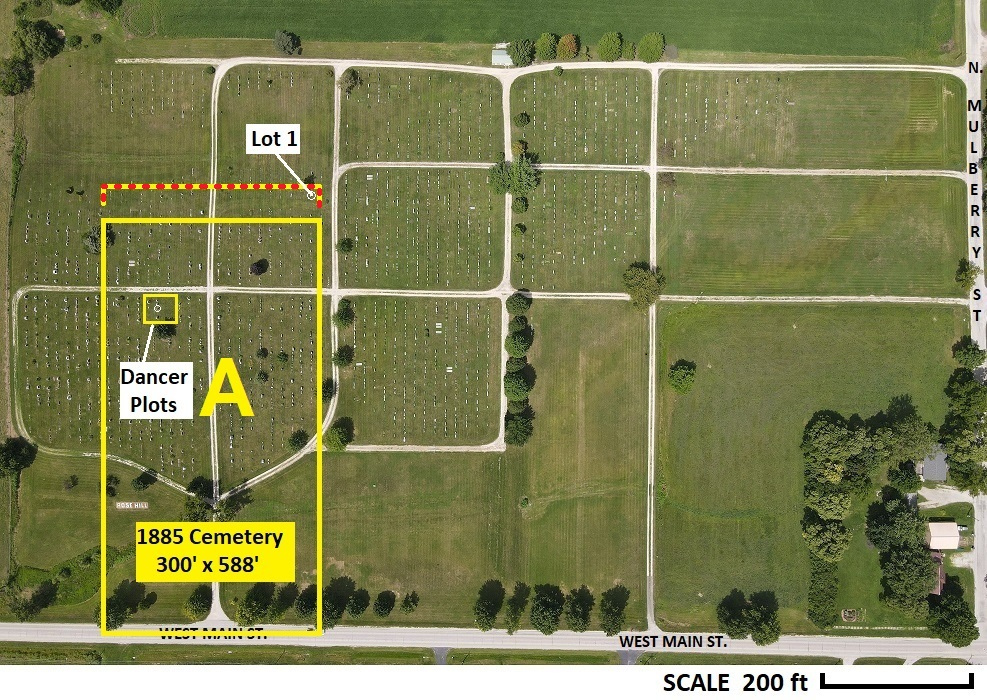
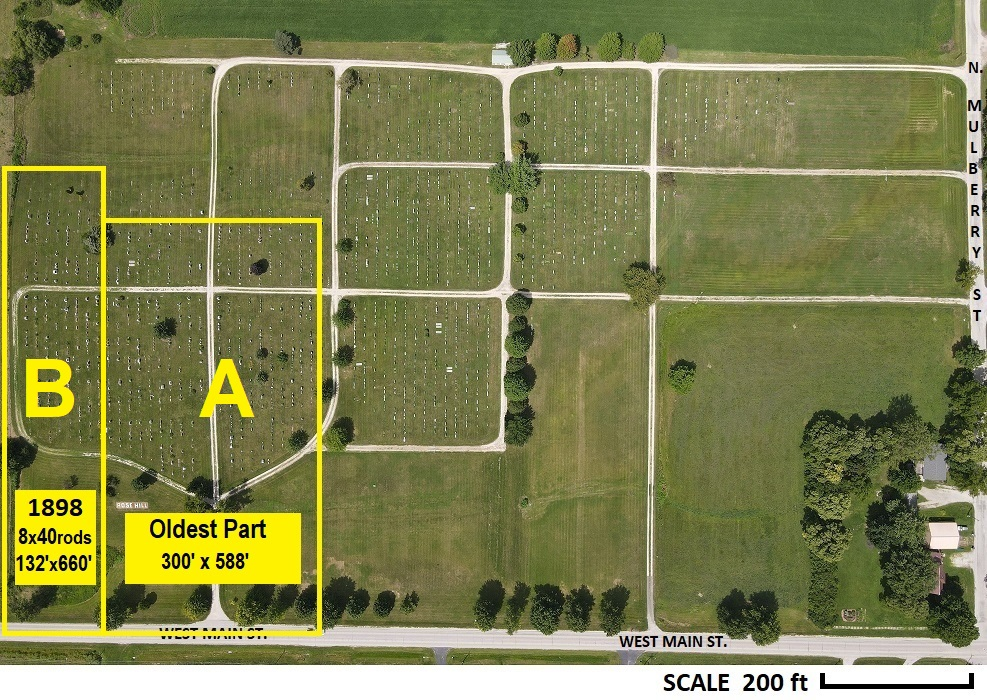
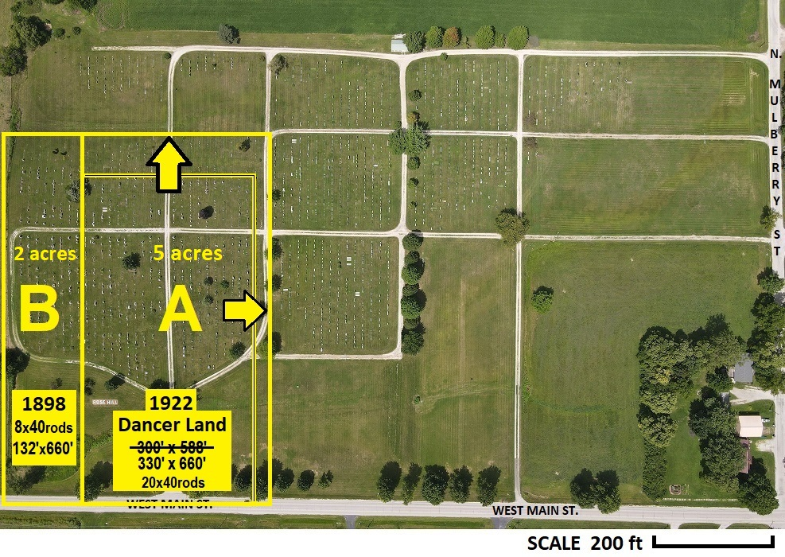
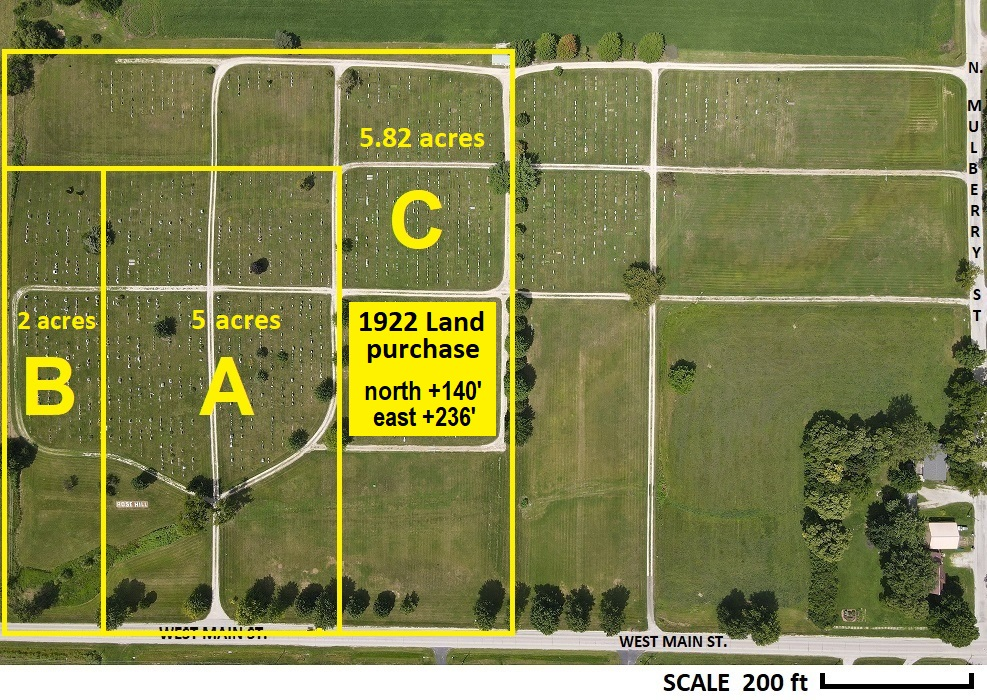
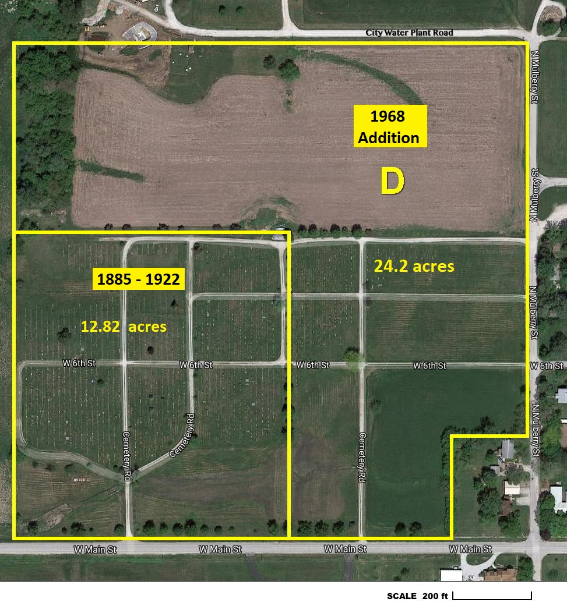
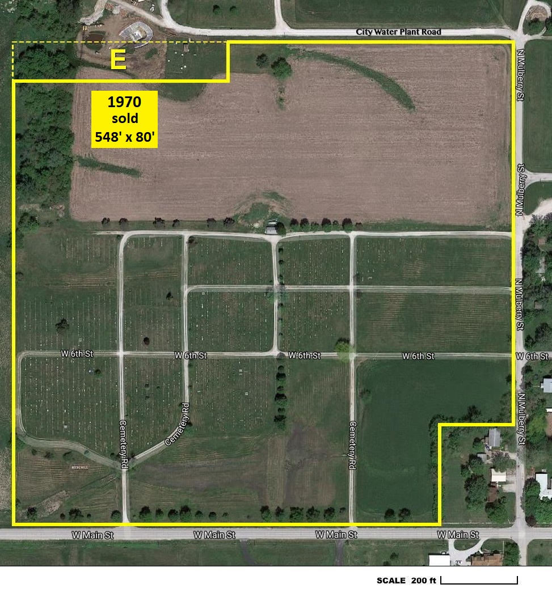
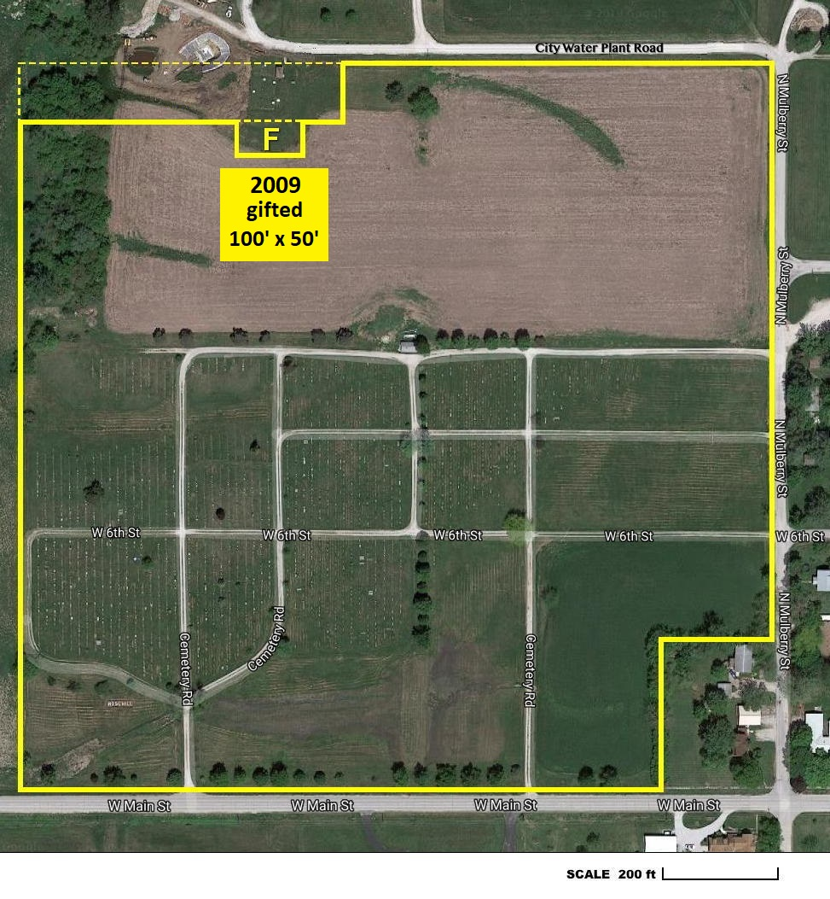

1885 - Rose Hill established on Dancer's land
{kind=link}

In October 1885, David and Roselia Dancer sold land where their son Albert was buried in 1881 to establish Rose Hill Cemetery (see 1885 deed). It sold for $115 to trustees Elijah Banta, Roselia Dancer, and Seth Bass, with Roselia guiding its formation. In 1886, burial lots were platted north of the original border, overlooked by the Dancers and trustees. The Dancer heirs corrected this in 1922.
The photo shows the original cemetery (Area A), the encroachment line, and the Dancer family plot with nine lots (3x3 layout). Albert's tree trunk monument stands at the center, the first burial. Notably the Dancers paid full price for their nine lots in 1886.
1898 - Adding land to extend western edge
{kind=link}

In August 1898, Rose Hill's trustees purchased 2 acres (Area B) from the RLDS church for $150 (see deed). This extended Rose Hill's western border by 8 rods (132 feet) to where the fence line now stands. The vertical length of the addition was 40 rods (660 feet), exceeding the 588-foot length of Area A purchased in 1885. Burial lots in Area A initially extended beyond the north border, but it was now assumed Areas A and B shared the same 660-foot length, creating a perfect rectangular shape for Rose Hill Cemetery. Additional lots were platted and sold above Area A up to the 660-foot line. This presumed rectangular layout is evident on the 1898 Lamoni City Plat.
1922 - Dancer heirs update the borders
{kind=link}

In October 1922, the Dancer heirs deeded a corrected version of Area A (see deed) for the price of $1. Besides establishing the north edge to align with Area B as was presumed for decades, it also extended the eastern border by 30 feet.
The new deed expressed dimensions in rods rather than feet, to be consistent with the deed for Area B. Area A was now 20x40 rods (5 acres). The slight expansion allowed one more row of new lots and a road along its east edge. This is why lot 1 in section 3s has lot 972 between it and the roadway to its east, because it got added much later (see grid map).
1922 - Last addition for the west cemetery
{kind=link}

In December 1922, the trustees purchased Area C from the RLDS church for $1,164 (see deed). This made the overall cemetery 12.82 acres in size, measuring 698'x800'. Later the size owned by the trustees was adjusted to 698'x771.7' since the lower 28.3' is part of West Main Street, owned by the city.
This acquisition completed what today is called the "old cemetery" or the "west side." All west side platted lots have a unique lot number, from 1 to 1862 ("lane lots" which begin with a letter came later). The west side was divided into sections to make it easier to communicate where a lot could be found, but section numbers were for convenience only.
1968 - East cemetery and north expansion
{kind=link}

In January 1968 the trustees purchased Area D from the RLDS church for $6,000 (see deed). It was paid in installments over the next decade. This tripled the size of the cemetery to 37 acres, extending it east to Mulberry Street and north to the city water plant road.
A eastern extension was platted for 14' burial lots interspersed with 8' walking lanes and one 6' wide lane. A new lot ID scheme was used for the east side that was sectioned into numbered blocks, each having lot numbers starting with 1. Both the Block and Lot numbers are needed to uniquely identify an individual lot. This part of the cemetery, south and east of the shed is called the "new cemetery" or the "east side."
The northern extension is for Rose Hill's future expansion and has not been platted yet. The Rose Hill Board rents it as farmland which provides a small income and saves on upkeep.
1970 - City buys a section for water treatment
{kind=link}

In May 1970, a 548'x80' portion of land in the northwest corner was sold to the City of Lamoni for $300 (see deed). The city wanted this as part of their water treatment plant facility. Area E in the photo illustrates this 1 acre of land that was sold.
2009 - City given an additional piece of land
{kind=link}

In November 2009, a 100'x50' rectangular property, marked as Area F in the photo, was deeded to the city at no cost (see quit-claim deed). The city wanted this for a new clear well, as part of the water treatment plant facility.
With this change, Rose Hill Cemetery covers almost 36 acres. About 14 acres are used for farmland, 2 acres in the NW corner is wooded, and the remaining 20 acres requires grounds maintenance (mowing, trimming, tree pruning, brush cutting, roadwork, etc).
Current property on county plat map